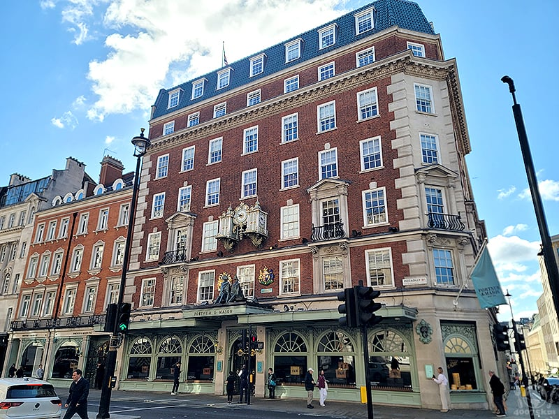
런던에도 백화점은 여러 곳이 있지만 저처럼 먹을 것에 목숨거는 사람이라면 해로즈와 포트넘 앤 메이슨을 양대 산맥으로 꼽습니다.
빡빡한 일정 상 해로즈 식품관과 포트넘 앤 메이슨 둘 중 하나를 선택해야 했는데, 별다른 고민 없이 포트넘 앤 메이슨을 골랐습니다.
해로즈는 백화점의 식품관을 크게 만들었다면, 포트넘 앤 메이슨은 식품 백화점이라고 해도 좋을 정도로 음식에 진심이거든요.
예전에 홍차 틴 캔에 그려져있던, 네 시를 가리키는 시계 그림을 보며 '언제 이 시계를 직접 보게 될까' 싶었는데 이렇게 보니 감동입니다.
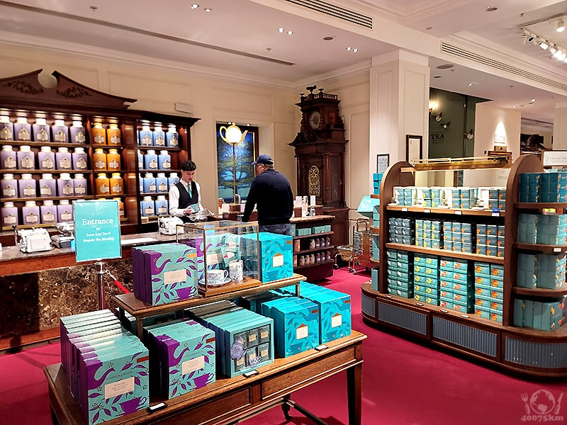
입구에서부터 그 종류와 양으로 사람을 압도하는 홍차들.
개인적으로 가향차는 프랑스, 홍차는 영국(중에서도 포트넘 앤 메이슨)을 선호하는지라 왕창 사고 싶었지만...
이미 파리에서 너무 많이 구입한 관계로 시그니처 6종 세트만 한 박스 구입했습니다.
다즐링이나 브렉퍼스트는 포트넘 앤 메이슨이 맛있더라구요.
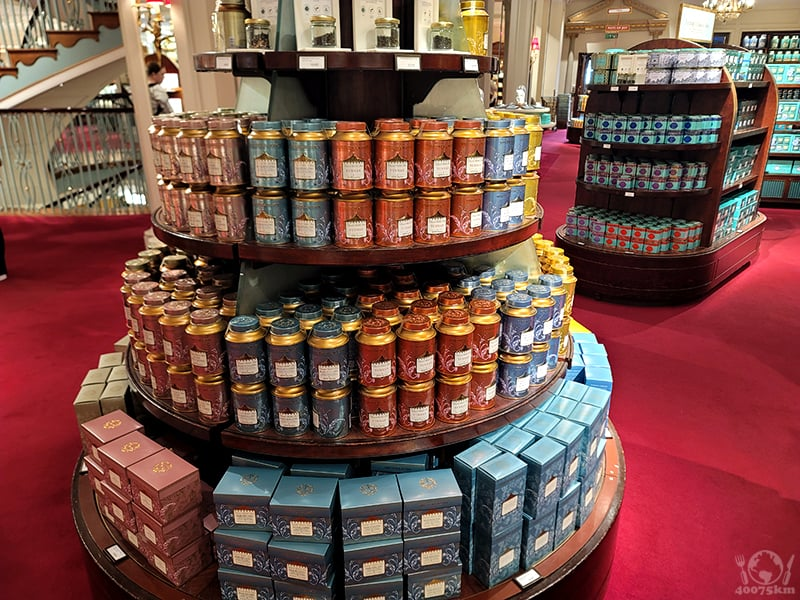
중국이나 인도 차들도 많이 있기는 한데...
중국차는 포트넘 앤 메이슨에서 한 다리 걸쳐서 사는 것보다 녹차나 백차 전문으로 다루는 곳에서 직접 사는게 가성비가 훨씬 좋으므로 패스.
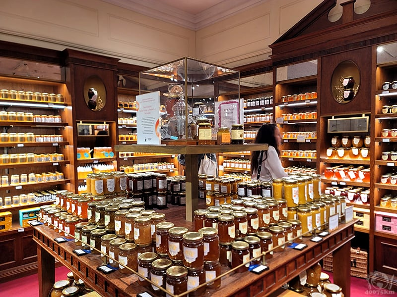
영국식으로 홍차를 마실 때면 설탕이나 꿀 역시 필수.
그래서 한쪽 코너에는 여러 종류의 꿀만 모아서 전시해놨습니다.
왠지 곰돌이 푸가 보면 큰일 날 것 같은 광경입니다.
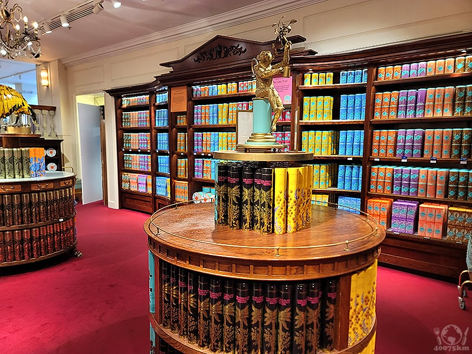
홍차에 곁들여 먹기 좋은 티푸드 역시 가득합니다. 이 깡통들이 전부 쿠키가 잔뜩 들어있는 쿠키 캔.
기념품으로 오르골 쿠키만 두 통 샀는데, 먹어보니 꽤 맛있길래 검색해봤더니 국내 가격은 한 캔에 5~6만원 후덜덜...
이럴 줄 알았으면 허리가 부러지더라도 대여섯 캔 사오는 건데 하는 아쉬움이 남습니다.
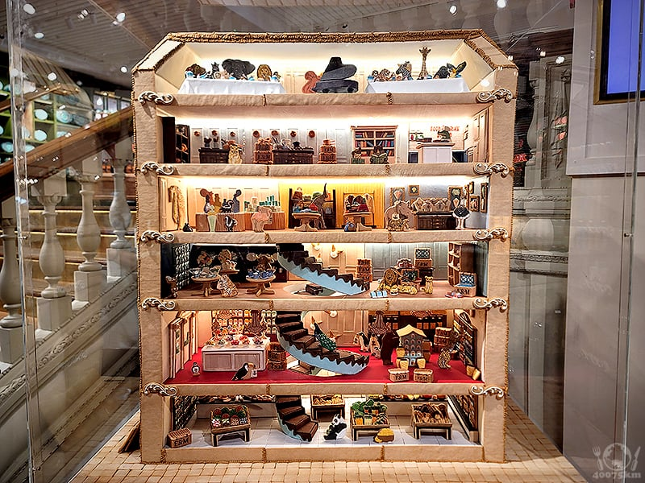
포트넘 앤 메이슨이 먹을 것에 진심이라는 건 한쪽에 진열되어있는 인형의 집만 봐도 알 수 있습니다.
전기 조명 빼고는 죄다 쿠키로 만든 인형의 집.
지하부터 5층(영국식으로는 4층)까지 어떤 상품을 다루고 있는지도 한 눈에 알 수 있게 만들었습니다.
동물 쿠키들이 깨알같이 조그마한 쿠키 테이블에 앉아 쿠키 찻잔을 들고 있는 모습은 일종의 장인정신을 넘어선 광기마저 느껴집니다.
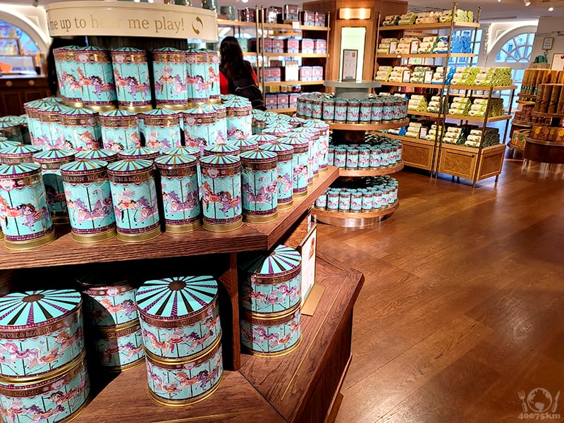
기념품으로 사기 딱 좋은 오르골 쿠키 틴캔.
보통은 태엽을 돌리면 음악이 나오는 식인데 포트넘 앤 메이슨 오르골 쿠키는 통을 돌리면 회전목마 돌아가듯 돌아가면서 음악이 흘러나옵니다.
백화점 건물모양 오르골 하나, 회전목마 오르골 하나씩 구입했네요.
통은 큰데 쿠키가 그렇게 엄청 꽉꽉 채워져있지는 않습니다. 데니쉬 버터쿠키 생각하고 구입했다가는 실망할지도.
게다가 쿠키가 맛있어서 더 문제입니다. 몇 통 더 사와야했어!
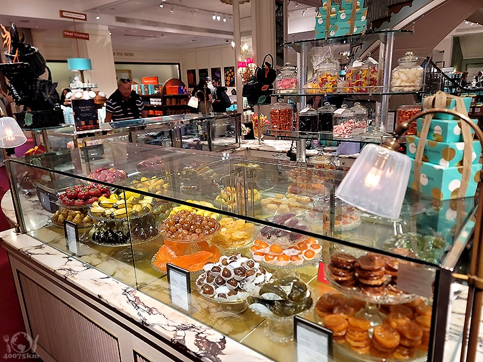
쿠키 옆에는 각종 달다구리들.
초콜릿 빼고 상상할 수 있는 거의 모든 종류의 사탕이 다 모여있는 듯 합니다.
젤리, 토피, 과일절임, 캔디 등등. 위그든 씨의 사탕가게에 들어가면 이런 느낌 아닐까 싶네요.
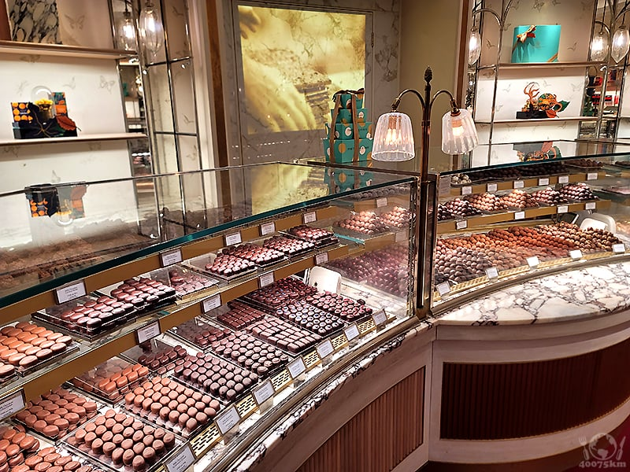
사탕 코너에 초컬렛이 없는 이유.
초콜렛 종류가 너무 많아서 이것만 따로 별도의 섹션이 있기 때문입니다.
여러가지 필링을 채워 넣은 초콜렛을 보니 현기증이 일어납니다.
보석상 강도가 진열장 깨고 금과 다이아몬드를 자루에 쓸어담듯 여기 널려있는 초콜렛을 죄다 쓸어담고 싶네요.
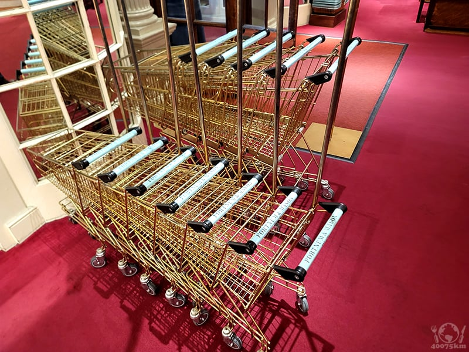
아랫층으로 내려가는 길에 발견한 쇼핑 카트.
아이들 전용으로 미니사이즈 쇼핑 카트가 있는 게 재미있습니다.
하지만 그냥 내버려두면 각종 달다구리들로 카트 하나는 금방 채울 것 같아 무섭기도 하네요.
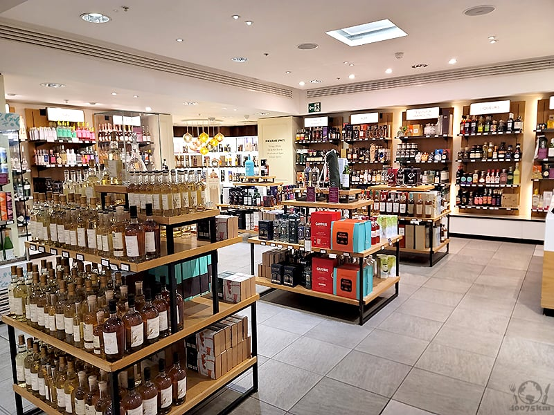
포트넘 앤 메이슨의 지하 1층으로 내려가자마자 시선을 사로잡는 다양한 주류가 보입니다.
위스키나 와인은 물론이고 세계 각국의 다양한 술이 골고루 진열되어 있습니다.
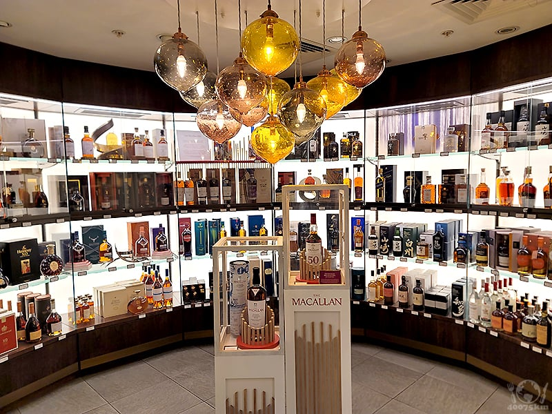
그리고 주류 코너 한쪽에는 뭔가 분위기부터 범상치 않은 술들이 따로 진열되어 있습니다.
다른 건 그렇다쳐도 맥캘란 더 레드가 눈부십니다. 맥캘란 좋아해서 데일리로 마시는 입장에서 50년짜리 더 레드는 그야말로 신의 물방울.
저거 한 병 있으면 오픈 안하고 자린고비마냥 흘끗흘끗 보면서 안주 삼아 맥캘란 12년을 먹어도 좋겠네 싶네요.
가격은 아마... 1억쯤 하지 않았나 싶습니다.
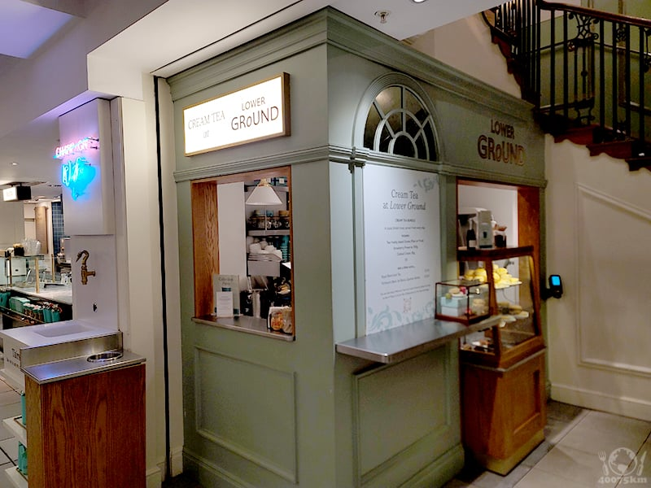
한쪽 구석에는 "지하에서 파는 크림티"라는 이름의 부스가 있습니다.
예전에 "잉글리쉬 크림티의 딜레마 포스팅에서도 언급한 적 있지만, 크림티는 홍차에 크림 타먹는 게 아니라 스콘과 크림과 잼의 조합을 일컫는 말입니다.
애프터눈 티는 점심식사와 저녁식사 사이에 샌드위치와 쿠키 등을 곁들여 먹는 다과, 하이 티는 저녁식사로 먹을 수 있는 따뜻한 음식을 곁들인 차를 의미하지요.
이 조그만 부스에서는 스콘과 잼, 클로티드 크림으로 구성된 테이크아웃 박스를 주력으로 판매합니다.
이거 한 상자 사서 홍차 한 잔 끓이면 훌륭한 영국식 크림티가 되는 거지요.
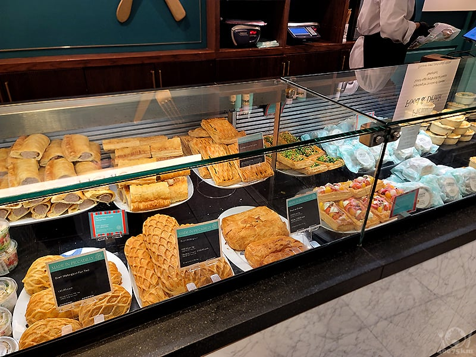
그 옆에는 좀 더 풍족한 식사를 원하는 사람들을 위한 여러 가지 고기 파이들이 잔뜩 쌓여있습니다.
마더 매쉬에서 고기 파이는 먹어봤으니 그렇게 아쉽지는 않을 줄 알았는데...
비프 웰링턴이라니! 저거 레스토랑에서 한 조각씩 썰어서 비싸게 파는 거 아니었어?라는 외침이 절로 나옵니다.
하루만 더 시간이 있었더라면 여기서 이것저것 사다 먹었을텐데 오늘 오후 비행기를 타야 한다는 사실이 안타깝네요.
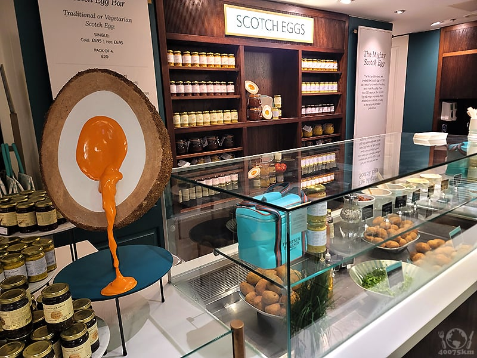
그 옆에서 산더미처럼 쌓아놓고 파는 영국식 달걀튀김, 스카치 에그 코너에서도 눈이 돌아갑니다.
잠시 후에 이 백화점 최상층의 티룸에 애프터눈 티 예약해놓은 것만 아니면 당장 달려들어서 먹었을텐데 말이죠.
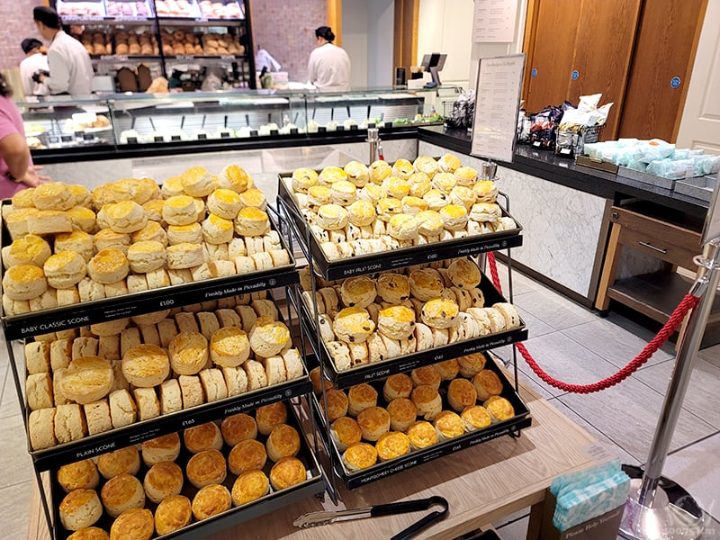
종류별로 쌓아놓고 파는 스콘을 앞두고는 오히려 무덤덤해집니다. 애프터눈티에 스콘도 함께 나올테니 이건 그렇게 아쉽지 않거든요.
다만 갓 구워낸 스콘을 언제든지 사먹을 수 있다는 점에서는 정말 부럽네요.
집에서 애프터눈티 삼단 트레이 구성하려면 스콘을 직접 구워야 해서 번거로운데 집 앞에 포트넘 앤 메이슨 같은 거 하나 있으면 일주일에 두세번씩 티파티를 벌여도 되겠다 싶습니다.
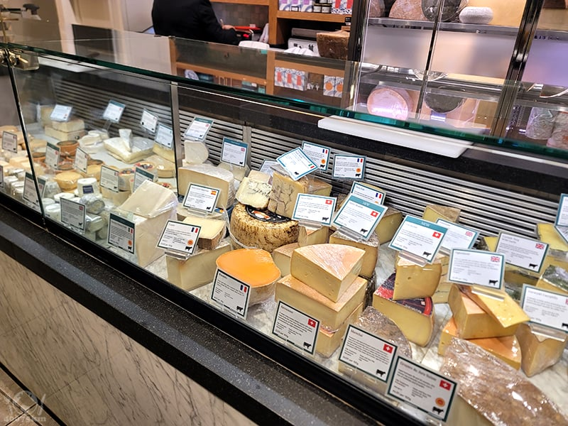
치즈는 프랑스에서 이미 한 번 아까워죽겠지만가져갈방법이없으니포기해라 면역 주사를 맞고 왔습니다.
다만 한국에서 치즈 인문학 수업 할 때 그렇게 구하려고 해도 못 구했던 영국산 스틸턴 치즈가 여기에는 (당연히) 널려 있는 게 부러울 뿐.
스틸턴 치즈 한 조각만 사서 어떻게 애프터눈티 먹을 때 곁들여 먹을 수 없나 고민하다가 그냥 깔끔하게 포기합니다.
블루 치즈라서 냄새가 엄청날테니까요.
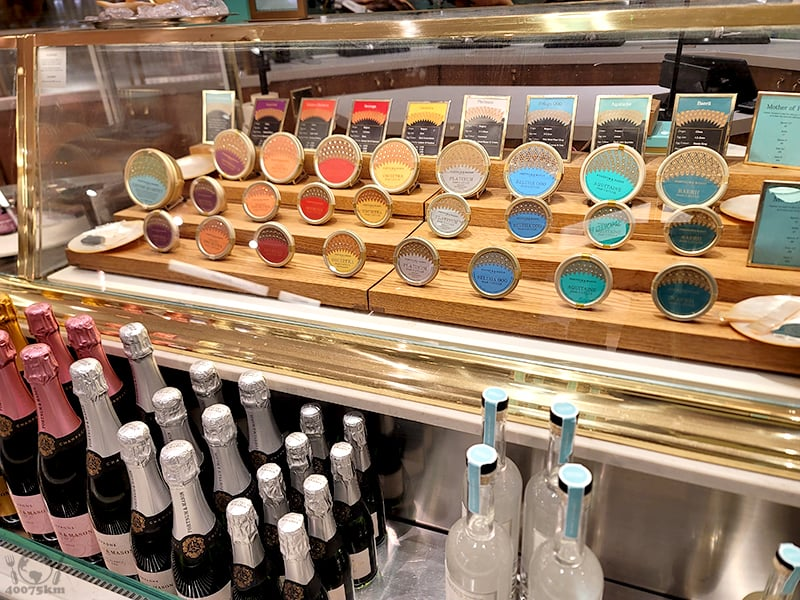
와! 캐비어! 와! 샴페인! 와! 가격 좀 보소!
포트넘 앤 메이슨 자체 브랜드 캐비어가 종류별로 쫙 깔려있어서 구경했는데 우리에게 잘 알려진 오세트라나 세브루가는 물론이고 저가형 베리에서부터 알마스에 이르기까지 등급별로 몽땅 갖춰놨습니다.
하지만 가장 저렴한 베리도 50그램에 17만원. 알마스는 무려 90만원 가까운 가격입니다.
품질은 확실하지만 가성비 따져서 구입하긴 어렵습니다. 그래도 미식 재료들을 한 곳에서 죄다 구입할 수 있으니 지갑 사정에 신경쓰지 않아도 되는 사람들은 편할 듯.
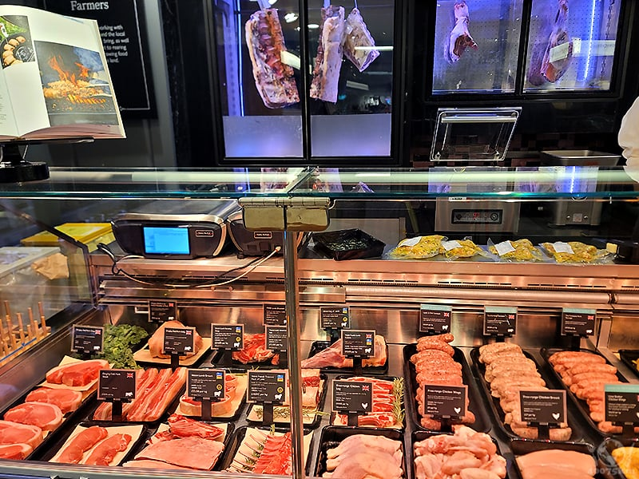
마지막으로 정육 코너를 구경하면서 지하 1층 투어도 마무리합니다.
뒤쪽에 걸려있는 고기들도 사진이 아니라 진짜 숙성육입니다. 빨간 조명이 아니라 파란 조명 아래 고기를 걸어놓으니 뭔가 새롭네요.
고기를 보면서 "젠장! 왜 이런 건 우리 동네엔 없는거지?" 투덜거리다가 담당 직원하고 최고의 고기는 어떤 건지 수다도 좀 떨고 그러다가 영국 정육업자의 한국 여행기도 좀 듣고 하면서 시간이 훅 가버렸습니다.
이제 엘레베이터를 타고 올라가서 구경을 계속합니다.
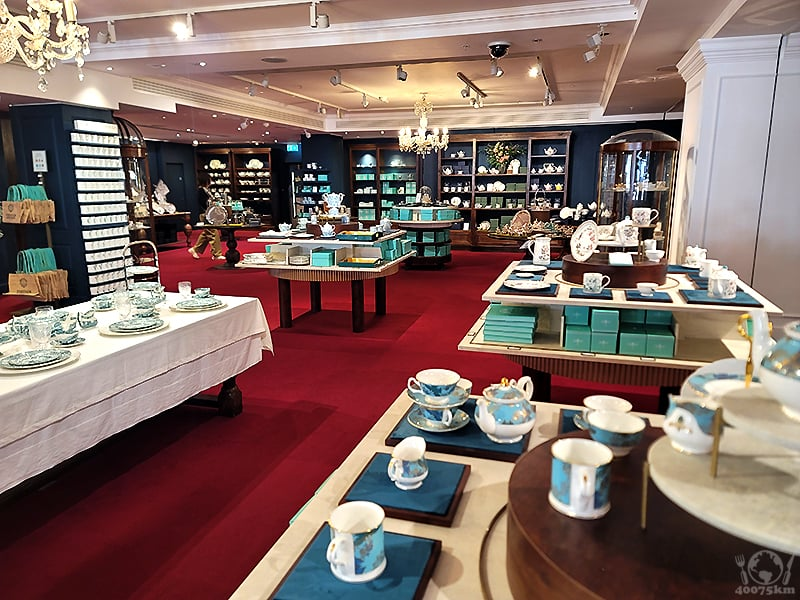
백화점 2층(영국식으로는 1층)은 티웨어 매장입니다.
주로 포트넘 앤 메이슨 자체 브랜드 도자기들이 진열되어 있습니다.
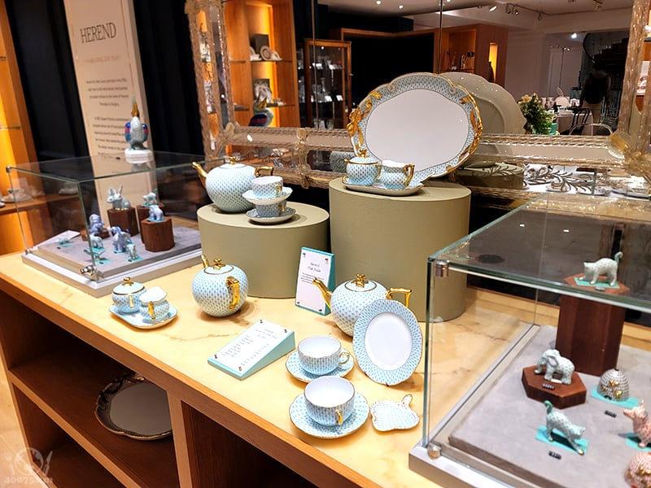
그릇 욕심 있는 입장에서는 풀세트로 질러버리고 싶지만 지갑이 협조를 하지 않는 관계로 하이티 티포원에 접시 한 개만 구입합니다.
그리고 은도금 티스푼과 티포크를 팔길래 각각 한 세트씩 샀지요. 나도 드디어 은식기(비록 도금이지만) 오우너!
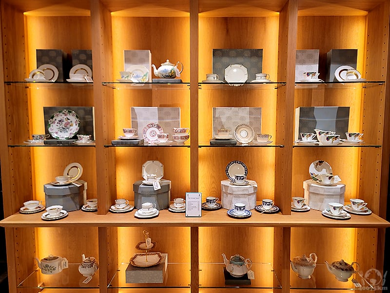
자체 브랜드만 모아놨는데도 정말 다양한 종류의 티웨어가 있습니다.
개인적으로는 포트넘 앤 메이슨의 시그니처 칼라가 메인으로 들어간 카멜리아, 스트라이프, 하이티 브랜드가 좋더라구요.
집에 와서 사용할때마다 느끼는 건데 카멜리아 티포투도 한 세트 사올걸 하는 아쉬움이 남습니다.
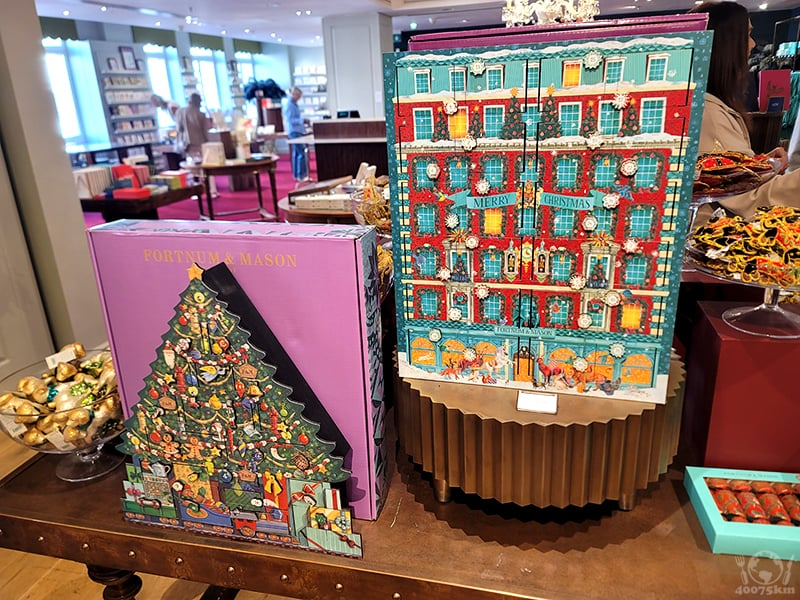
여행했던 시기가 9월이라 아직 크리스마스 시즌은 아니지만 그래도 슬금슬금 나와서 자리를 차지하고 있는 성탄절 장식품.
여러 개의 서랍이 있는데, 자그마한 쿠키나 초콜렛 등을 넣어두고 크리스마스 간식으로 먹는 용도입니다.
보석함이나 자질구레한 소품 정리함으로도 좋을 것 같네요.
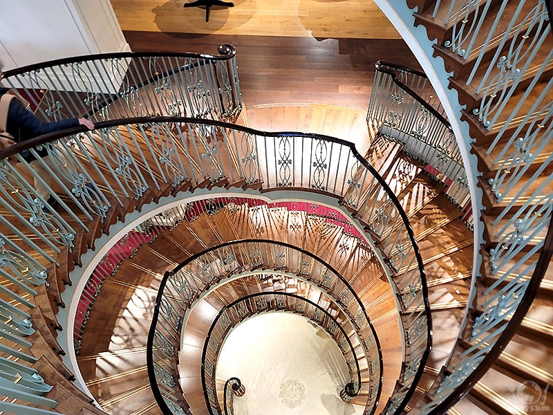
다음 층으로 올라가는 길에 계단이 예뻐서 한 장 찍어봤습니다.
난간도 포트넘 앤 메이슨 색깔이네요. 약간 어딘지 모르게 티파티가 떠오르는 색깔이기도 하구요.
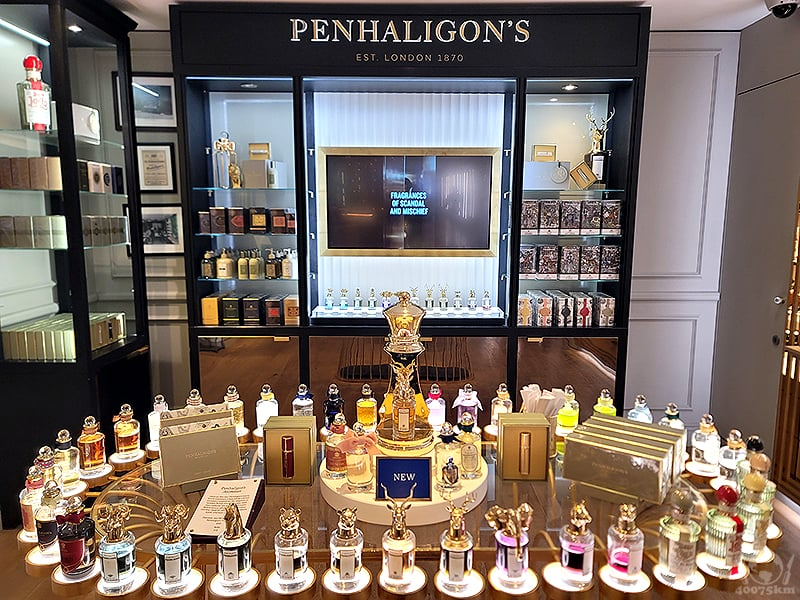
3층은 식품이 아니라 향수와 보석 등을 다루는 매장입니다.
동물 머리 모양으로 유명한 펜할리곤스가 있네요.
완전히 맞춤형 향수까지는 아니더라도 제품 꽤 다양하고 주변에서 쉽게 볼 수 없기 때문에 가장 마음에 드는 거 하나 콕 찝어서 시그니처 향으로 사용하기 좋습니다.
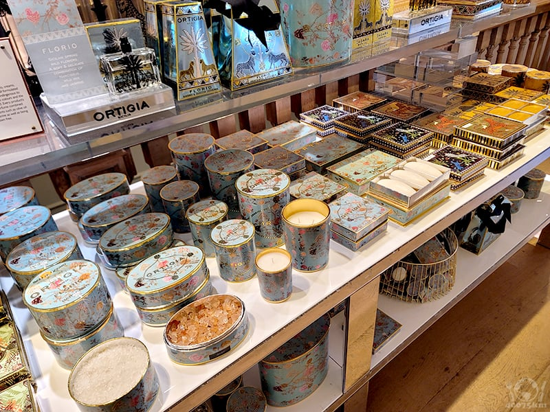
소금과 향초, 비누 등 각종 목욕용품도 한가득.
이걸 보면 꼭 먹을 것에만 진심이라기보다 뭔가 삶을 좀 더 풍족하게 즐기고 싶을 때 필요한 것들을 모아놓은 백화점이라는 생각도 듭니다.
하지만 먹을 수 없는 것에는 집중력이 급격하게 떨어지는 고질병이 있어서 그냥 슥슥 넘어가고 다음 층으로 이동.
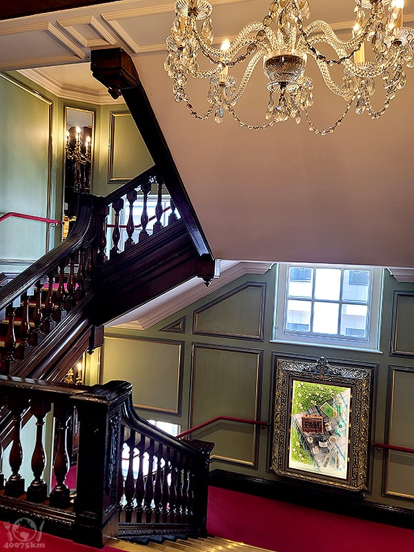
메인 계단이 아니라 측면 계단으로 한 층 더 올라갑니다.
왠지 오페라 가르니에 계단이 떠오르는, 그런 멋진 계단이네요.
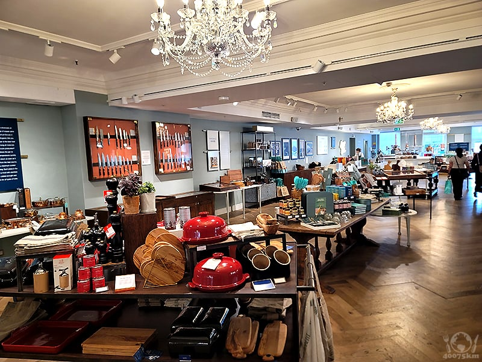
4층에는 여러 가지 요리도구와 요리책, 그리고 캐주얼 카페가 있습니다.
티웨어라면 모를까 요리도구를 굳이 여기서?라는 느낌. 품질은 나쁘지 않아보이는데 엄청 비싸거든요.
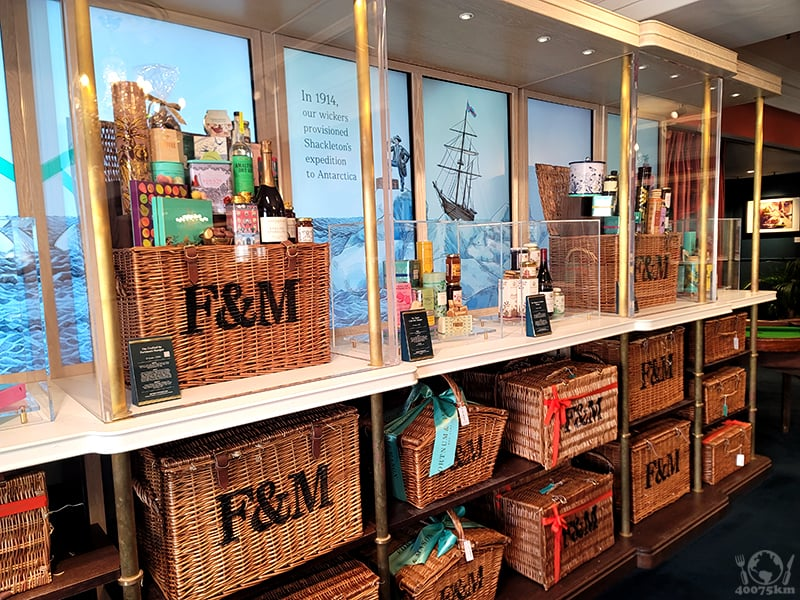
한 가지 놓칠 수 없는 곳은 바로 햄퍼(Hamper) 코너.
고풍스러운 피크닉 장면에 빼놓을 수 없는 피크닉 바구니를 전문적으로 판매합니다.
여기서 중요한 건 바구니가 아니라 그 내용물이지만요. 바구니는 뭐랄까, 그냥 포장용기 비슷한 느낌입니다.
한국까지 배송도 해준다고는 하는데, 이미 여행 막바지인지라 예산도 거의 바닥이라 사고 싶어도 살 수가 없습니다 흑슥
그래도 각각의 구성을 잘 살펴봅니다. 피크닉 바구니는 하나 있으니까 내용물 구성만 참고해도 큰 도움이 되거든요.
머릿속으로 와인과 초콜렛, 쿠키를 가득 채운 바구니 들고 한강 공원으로 놀러가는 상상을 해봅니다.
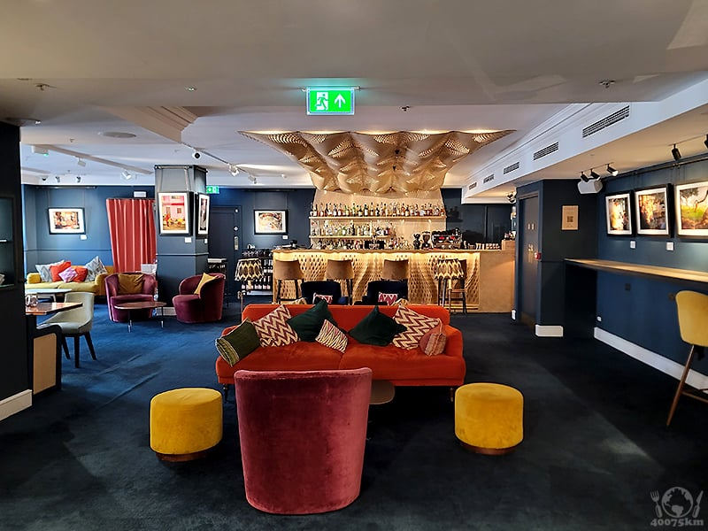
한 층 더 올라가면 티룸인지라 백화점 아이쇼핑은 여기까지입니다.
지친 발걸음을 쉴 수 있는 바 공간도 따로 있네요. 어차피 티룸 예약시간이 다 된지라 굳이 여기서 쉴 필요 없이 바로 올라갔지만요.
전반적인 감상이라면 "음식, 특히 티타임을 좋아하는 사람을 위한 디즈니랜드"라고 할 수 있지 않을까 싶습니다.
가성비로 접근하기엔 무리가 있지만, 인생 살면서 약간의 럭셔리함을 첨가해서 좀 더 풍요롭고 행복한 시간을 보내고 싶을 때 필요한 준비물을 구할 수 있는 백화점이랄까요.
댓글
수집 당시 댓글 40개
ㅇㅇ · 11.27 12:07:41
전기기사 · 11.27 13:32:21
포도쥬스. · 11.28 08:37:49
ㅇㅇ · 11.28 08:38:27
히이잉 · 11.28 08:39:11
ㅇㅇ · 11.28 08:51:11
한갤러 · 11.28 08:55:41
히이잉 · 11.28 09:01:13
rxde · 11.28 09:09:11
ㅇㅇ · 11.28 09:24:04
ㅇㅇ · 11.28 09:36:42
· ㅇㅇ · 11.28 16:42:59
ㅇㅇ · 11.28 09:49:17
ㅇㅇ · 11.28 09:51:00
ㅇㅇ · 11.28 09:59:15
마이더스터치 · 11.28 10:01:53
히이잉 · 11.28 10:19:15
ㅇㅇ · 11.28 10:22:15
· ㅇㅇ · 11.28 16:28:14
ㅇㅇ · 11.28 10:39:33
ㅇㅇ · 11.28 11:38:41
ㅇㅇ · 11.28 12:16:31
ㅇㅇ · 11.28 12:24:32
ㅇㅇ · 11.28 12:33:06
ㅇㅇ · 11.28 12:38:40
ㅇㅇ · 11.28 13:17:08
· ㅇㅇ · 11.28 13:25:28
로마네 · 11.28 13:22:28
makima · 11.28 14:25:27
ㅇㅇ · 11.28 15:29:50
ㅇㅇ · 11.28 16:01:57
ㅇㅇ · 11.28 17:09:03
ㅇㅇ · 11.28 19:07:35
795 지도자 · 11.28 19:12:45
795 지도자 · 11.28 19:12:53
795 지도자 · 11.28 19:13:08
795 지도자 · 11.28 19:13:16
795 지도자 · 11.28 19:13:29
795 지도자 · 11.28 19:13:48
ㅇㅇ · 11.28 19:50:51